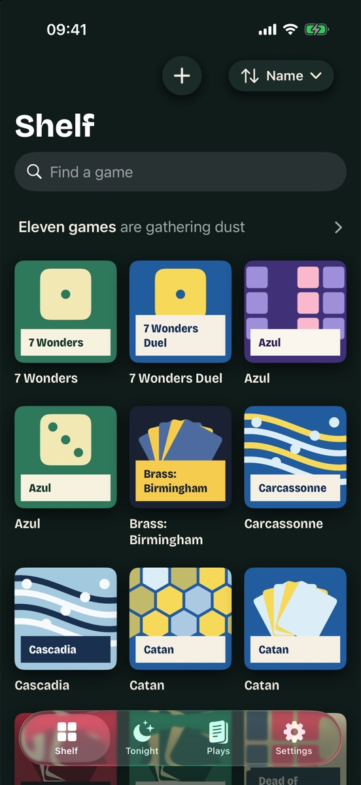
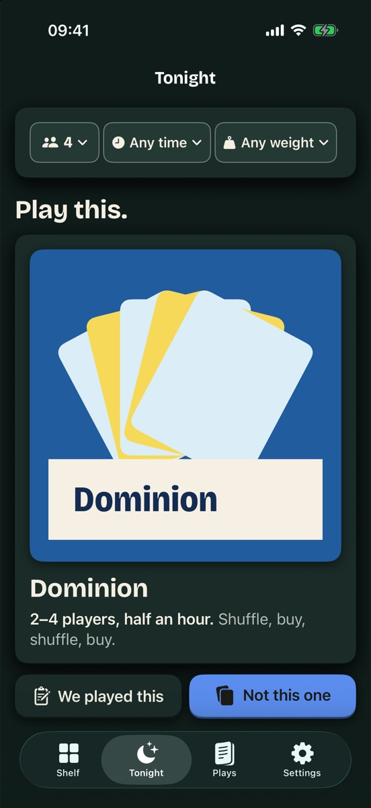
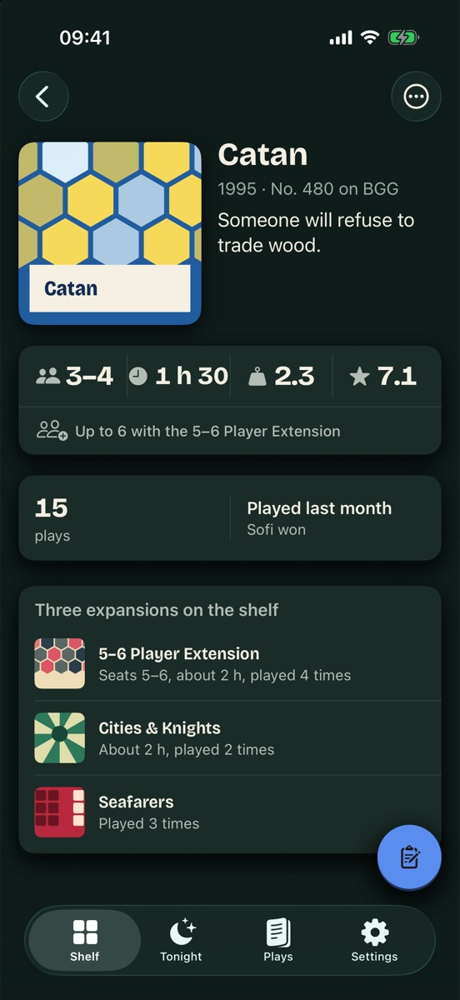

Shelf
A small, free iOS app for browsing a board game collection on the phone, and for answering "what should we play tonight?"
The BoardGameGeek collection page is hard to use on a phone. Shelf shows the same collection as a grid of box covers, with a page per game and a Tonight screen that picks a game from player count, time and weight. I'm building it for myself and a few friends. It isn't on the App Store.



How Shelf uses BoardGameGeek
Shelf reads from the BGG XML API only when the user asks it to:
- It imports the games a user owns, by BGG username (
collection). - It searches for a game by name when adding one (
search). - It reads each game's facts and cover once, up to 20 games per request, one request at a time (
thing).
Everything is stored on the phone, and the app works offline after that. It never writes to BGG and never polls in the background. There are no accounts, ads, payments or analytics, and BGG data is never redistributed. Games can also be typed in by hand.